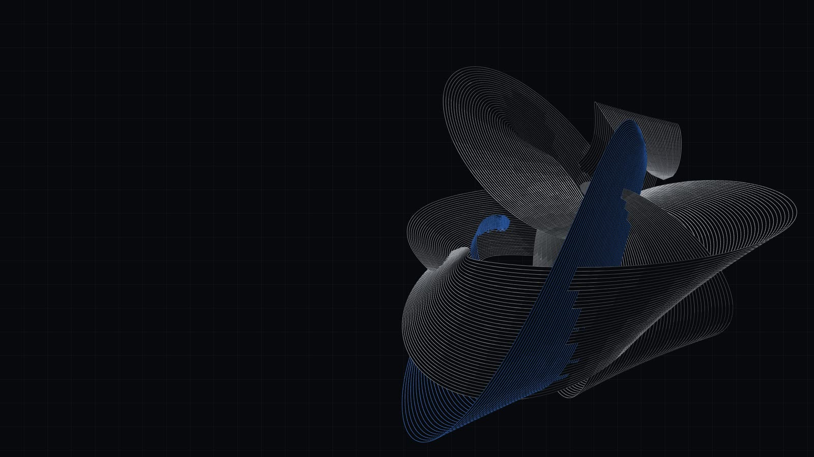

One repository, one goal. Many hands.
EDIFY will be the shared brain of a team. The goal, the task board, a journal of what each person and agent did and how, and the playbooks distilled from it, all as plain files in your repository, synced by git. Every agent will start where the team left off.
enforcedadvisoryblockednot built yet
The film · 49 s
Forty-nine seconds, no sound.
Every line on screen comes from the update, with its source in the corner. The team brain is specified, not built, and the film labels its terminal output that way.
01 / The boundary
It fragments across people.
EDIFY was designed for one developer and one agent: plan hard once, then build the whole feature in one run, so no session boundary could lose coherence. A team puts the boundary back.
Perception
Runs Claude Code. Cannot see what controls decided this morning.
Controls
Runs Codex. Claims the task perception claimed twenty minutes ago.
Firmware
Flashes boards on a bench. The fix for the CAN bus stays on the bench.
Research
Rewrites the goal after every test day. One session keeps working to the old one.
Four questions every session asks12-teams.md §1
What are we trying to do?goal.md
What should I do next, and is anyone already on it?the board and claims
What is everyone else doing right now?edify team status
How has this been done before, here, on this system?journal, playbooks
None of this is an intelligence problem, and the next model will not fix it. The missing information lives on someone else's machine, in someone else's head, or in a session that already ended.
02 / On disk
State is never stored, so state never conflicts.
Five kinds of file in one directory, committed with the code it describes. Everything that changes often is append-only, one file per event, at a path unique to its author and second. Claimed, contested, blocked, stale and done are computed from those files, never written down.
.edify/team/specified layout · not built yet
tree .edify/team
goal.md the shared goal. humans edit it
profile.md the team questionnaire's answers
tasks/<id>.md the definition, never the state
journal/<who>/ append-only. claims, progress, done, how
playbooks/ how it is done here. a human admits each
# one file per event, so two machines never edit one file
+ journal/sg/20260926T101100Z-T-sg-12-claim.md
+ journal/mr/20260926T102847Z-T-mr-9-progress.md
+ journal/cl/20260926T141502Z-T-cl-4-done.md
architecture/01-team-folder.md · 03-sync.mdMarkdown, flat YAML, no JSON on disk
01Git is the syncPull to see the team; push to be seen. No EDIFY process runs between teammates.
02Any kind of taskA task has a kind: code, experiment, hardware, research, review, ops. The journal records the rig, the parameters and the result, not only a diff.
03The board and the build planThe board says where to go next. A code task links to
specs/<feature>/, and /build still runs its tasks.md.04Readable by anyoneAny agent that can read a file can read the brain, and so can any human.
03 / Status
A pure function over files. The same answer on every machine.
edify team statusspecified output · not built yet
edify team status
goal one unassisted lap of the Varsity track by 2027-03-15 goal.md, edited 2d ago
in flight
T-sg-12 fuse lidar+camera in tracker sg · claude-code progress 40m ago
T-cl-4 brake ECU CAN bring-up cl · human progress 2h ago
T-mr-7 sim sweep: steering gains mr · codex no progress 5d · stale
contested
T-sg-15 replay harness for bags sg vs mr both claimed · earliest: sg
blocked
T-cl-6 HIL rig for brake controller "waiting on harness from EE subteam"
ready
T-mr-9 data-collection run, wet track experiment · perception
authors sg 40m ago · cl 2h ago · mr 5d ago ← git pull to refresh
architecture/02-team-cli.md · plain text on stdout,
--json on every readno model is calleddone refuses without a How: how you did it is the part the next person needs.enforcedclaim warns and never refuses. Contested and stale are shown, not prevented.advisoryblock needs a reason. A block with no reason is a status nobody can act on.blocked04 / The commands
Each answers one question.
Plain text on stdout, so any agent that can run a shell command can use them: Claude Code, Codex, Cursor, and whatever you run next. Stdlib only, offline.
architecture/02-team-cli.md · 05-agents.md
Set up the brain and ask the team questionnaireteam init
A new task on the board, from anyone, at any timeteam add
I am on it, I am off it, it is done, it is stuck and whyclaim · release · done · block
Who, person and agent, is on what; what is ready, blocked or staleteam status
How I did it: commands, rig, parameters, dead ends, frictionteam log
Everything a fresh agent session needs, on one pageteam brief
Turn journal entries into a proposed playbook; a human admits itteam learn · admit
05 / The learning loop
Agents propose. A human admits.
A wrong journal entry misleads one person once. A wrong playbook misleads every agent until someone notices. So the one step that makes something trusted context is the step where a person reads it.
journal · HowDone entriescl/…T-cl-4-done.md
learnEvidence and a skeleton_proposed/can-bench-bringup.md
the doorA human reads itadmit, or reject with a reason
trusted contextAn admitted playbookplaybooks/can-bench-bringup.md
architecture/04-learning-loop.md · the same door as harvest. The CLI never writes prose; an agent fills the skeleton.
06 / What we took, and from whom
Coordination is a file an agent reads, never a protocol agents negotiate.
| From | We took | We refused |
|---|---|---|
| Ruflo | Agents claim tasks; agents record how they worked; successful work distils into reusable guidance. | The runtime, 300+ MCP tools, swarm topologies, consensus protocols, vector memory, federation. |
| Claude Code Agent Teams | The pending, in-progress, completed lifecycle and dependency markers. | The assumption of one lead session on one machine. |
| EDIFY's own harvest | Propose, a human admits, then persistent trusted context. | Nothing. The learning loop reuses its door. |
design/update/12-teams.md §5 · decision D-3
07 / No server
Git is the server.
Every refusal below either breaks a standing commitment or is impressive rather than essential. Each can be reopened by evidence, never by enthusiasm.
The team brain is plain files, synced by the git you already use.
No telemetry, and no per-agent metering.
Journal lines that match the secret screen are refused.
A server.A sync service.A database.Embeddings.Consensus.Telemetry.
design/update/12-teams.md §8 · principle P9
08 / Who it is for
Design partners improve it. Startups pay for it.
U of T design teams and labs
Design partner
$012-month team token
Rocketry, solar car, self-driving, robotics, hardware and software research
Onboarded in person, at least one hardware-heavy team first
What we ask: a weekly friction review, and permission to cite you
Startups in the U of T ecosystem
Team
$99usd / team / month, flat · proposed
Up to 10 humans, unlimited agents, unlimited projects
Everything the paid gates unlock
A starting guess. It moves after ten paying teams
Banks and larger organisations
Enterprise
Contract
Offline, auditable, no telemetry, by construction
Site licence, customer-held key
Nothing is built for a bank before one asks
design/update/12-teams.md §2, §7 · decisions D-2, D-4

09 / The first milestone
Two machines. No server.
Two people on two machines, one using Claude Code and one using Codex, share a repository. After git pull, each runs edify team status and sees the other's claimed task and last journal entry. That is the check the first week has to pass.
The design and the amendmentsratified 2026-09-26
edify team, the CLIspecified · the build is nextThe team plan and design-partner tokensspecified